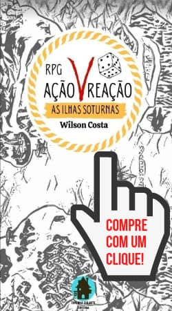

AS ILHAS SOTURNAS
O livro RPG AVR: As Ilhas Soturnas, publicado em 2021 pela editora Taverna Gularte, contém o conto As crônicas de Golgy, o cenário As Ilhas Soturnas e o sistema RPG AVR.

RPG AVR: As Ilhas Soturnas
Livro físico: R$ 34,90
"Sistema, cenário e crônica introdutória."
RPG AVR: Regras.
(O livro RPGAVR: As Ilhas Soturnas possui um conjunto de regras completo)
RPG Ação V Reação é um sistema criado por Wilson Costa, versátil e adaptável para diversos cenários e tipos de mesa.
"Toda ação tem uma reação".
O Dado d6:
1 - 3 Falha
4 - 6 Acerto
ACERTO CRÍTICO (6)
Ação: acerta a ação e anula a reação oposta.
Reação: acerta a reação e ganha uma ação mediata, tirando seis (6) no dado ganha 1 XP.
FALHA CRÍTICA (1)
Ação: falha na ação e perde sua próxima reação.
Reação: falha na reação e perde sua próxima ação.
O poder físico (F) é metade do valor de corpo arredondado para baixo, o poder espiritual (E) é metade do valor da alma arredondado para baixo.
(Este cenário se passa na ilha de Aske, um pequena fração de território ao norte das continentais Ilhas Soturnas)
A ilha de aske fica ao norte de soturna e abriga elfos, anões e humanos e imigrantes de soturna.
O povo nobre da cidadela se limita a proteger seus dominios e apenas negociar com o povo da plebe "abaixo" nas fazendas e na vila.
Grendel era um nobre guerreiro da cidadela que decidiu descer e proteger as fazendas e o vilarejo costeiro, repeliu os orcs e se tornou um grande heroi e fundador da Guilda do Moinho, quando morreu batizaram a vila com seu nome.
No norte fica Forte Vaekan, uma cidadela militarizada, no centro a Guilda do Moinho ao leito do rio rodeada de fazendas, e ao sul fica a antiga vila e agora cidade livre de Grendel, o coração do comercio próximo a praia.
(O livro RPGAVR: As Ilhas Soturnas possui 12 raças jogáveis)
Elfos
Humanoide alto (1,85 - 2,10)
Corpo: 1 Alma: 3
CR – Arcano nato: Pode realizar pequenos truques como acender uma fogueira, fazer crescer uma flor e usar magia para atacar um alvo e causar seu dano espiritual.
Descrição: Belos e ágeis, conhecedores da magia e guardiões dos mistérios, os elfos vivem nos bosques.
‘’Isto é magia sombria! - Elsferom’’
Anões
Humanoide pequeno (1,25 m – 1,50 m)
Corpo: 3 Alma: 1
CR – Mestre do machado: Ao tirar 6 no ataque usando um machado causa dano total (espírito mais físico)
Descrição: Robustos e corajosos, exímios mineradores e artesãos, os anões vivem no coração das montanhas.
‘’O jantar já está pronto? -Hilly’’
Humanos
Humanoide médio (1,75 m – 1,80 m)
Corpo: 2 Alma: 2
CR – Oportunista: Ao tirar 6 na rolagem do d6 ganha 1 XP extra.
Descrição: Fortes e astutos, frutos da união de elfos e anões, os humanos são numerosos e adaptáveis.
‘’Quanto será que isso vale? - Alastor’’
OPHIJA (Homem -Serpente)
Humanoide comum (1,60 -1,80)
Corpo: 1 Alma: 3
CR -Troca peles: Por 1 de alma assume outra forma humanoide mantendo seus atributos.
Descrição: Diferente dos Pangris, é melhor não confiar neles, as vezes eles têm seus objetivos sem querer dividir a fatia do bolo.
‘’Melhor não dar na vista ou vou ter que trocar de pele de novo.- Baramie
(O livro RPGAVR: As Ilhas Soturnas possui 16 classes)
PALADINOS -Cavaleiros Solares: (Sowelu):
Nível 1 (6 XP) -Lâmina Solar: Invoca uma lâmina de fogo que causa o dano espiritual.
Nível 2 (12 XP) -Círculo Flamejante: Invoca uma labareda que rodeia o alvo, em você ou um aliado cura 1 de corpo a cada 1 de alma, em um adversário causa 1 de dano espiritual cada 1 de alma.
Nível 3 (18 XP) -Prece do Devoto: Ganha um aumento temporário de alma no valor de seu poder espiritual × o seu nível, perde a próxima reação.
Nível 4 (24 XP) -Lança Solar: Arremessa uma lança de energia solar em direção ao inimigo, causando seu dano espiritual. (10m)
Nível 5 (30 XP) -Capa da Alvorada: É revestido por um manto de energia solar que adiciona seu poder espiritual no corpo temporariamente. A todo acerto crítico pode gastar 1 de alma para adicionar 1 no corpo temporariamente.
Nível 6 (36 XP) -Escolhido de Auseias: Se cair a 0 de corpo, por 5 de alma pode se erguer com metade de seus atributos iniciais.
BÁRBAROS -Punho Dentado: (Thurizas):
Nível 1 (6 XP) -Punho Espinhoso: A cada 1 de alma adiciona 1 de dano espiritual no combate corpo-a-corpo.
Nível 2 (12 XP) -Couraça de Lutador: A cada 1 de alma adiciona 1 de corpo temporários.
Nível 3 (18 XP) -Imobilizar: Se tirar 6 no ataque anula também a próxima ação do adversário e o imobiliza.
Nível 4 (24 XP) -Reflexos Apurados: Se tirar 6 em uma reação ganha 2 ações ao invés de uma.
Nível 5 (30 XP) -Finalização: Se o adversário imobilizado falhar na reação sofre dano dobrado.
Nível 6 (36 XP) -Lutador Experiente: Ganha uma ação extra no seu turno.
MAGO -Ordem dos Prilgrins (anakreb)
Nível 1 (6 XP) -Elemento Caótico: gera uma lança ou esfera de elementos fundidos com Caos (dano espiritual).
Nível 2 (12 XP) -Canção de Ninar de Mergo: invoca uma névoa de veneno direto dos pesadelos divinos (causa seu dano espiritual e 2 de dano espiritual extra de envenenamento a cada turno caso o alvo não passe na reação, com 5-6 escapa do envenenamento)
Nível 3 (18 XP) -Lâmina do Servente Caótico: Por 2 de alma embute a própria arma ou a de um aliado com caos fundindo o dano espiritual com físico.
Nível 4 (24 XP) -Chama do Caos: Por 3 de alma uma chama negra nascida da pura destruição envolve o alvo causando agonia extrema causando o dano espiritual (o próximo crítico do alvo conta como 5)
Nível 5 (30 XP) – Assassino da Corte: Por 3 de alma na sua ação invoca uma aura de puro caos que assume forma de uma caveira com armadura pesada feminina, ela ataca um alvo a seu comando, ao socar o adversário ela explode se destruindo causando seu dano espiritual x seu nível total no adversário e em todos adjacentes.
Nível 6 (36 XP) -Avatar do Caos: Por 5 de alma envolve seu corpo totalmente com as chamas negras do Caos (Dobra seus atributos atuais).
PATRULHEIRO -Dragões Azuis (Laguz)
Nível 1 (6 XP) -Tiro Duplo: Se acertar o primeiro disparo pode disparar novamente.
Nível 2 (12 XP) -Manto do Caçador: Por 1 de alma pode andar furtivamente por 20m.
Nível 3 (18 XP) -Perseguidor: Se já causou dano crítico ao alvo no combate adiciona o poder espiritual no disparo.
Nível 4 (24 XP) -Tiro Certeiro: Acerto crítico causa dano dobrado.
Nível 5 (30 XP) -Disparo preparado: Ao invés da reação pode sofre o ataque e realizar um disparo.
Nível 6 (36 XP) -Saraivada: A cada acerto no alvo ganha um disparo extra por 1 alma, se acertar crítico não gasta o próximo.
(O livro RPGAVR: As Ilhas Soturnas possui uma regra para criação de criaturas únicas)
Zumbis
C: 9 A: 2
(Noite A: 4)
"Criaturas decompostas, lentas e famintas, seus movimentos ficam mais rápidos a noite."
CR: Mordida: Por 1 de alma morde a vitima e a infecta causando dano total, se o corpo da vítima cair a zero ou menos ela deve passar em uma reação para não se transformar em Zumbi na hora.
Zumbis-vomitadores
"Zumbis que dissolvem suas vítimas a distância antes de devora-las usando seu ácido gástrico".
C: 8 A: 3
CR: Ataque gástrico: Ataca com uma rajada de vômito de ácido gástrico dissolvendo suas vítimas causando dano espiritual, se o zumbi gastar 1 de alma no ataque ou tirar 6 no ataque adiciona o físico no dano do vômito gástrico (15m).
Zumbis-inchados
"Zumbis inchados atacam com força bruta, quando morrem explodem liberando um gás contagioso contaminando as vítimas".
C: 10
A: 1
CR: Explosão contagiosa: Quando o corpo do zumbi-inchado cai a zero ou menos o zumbi explode liberando gás causando 50 de dano em vitimas adjacentes a ele e as contaminando, se a vitima cair a zero ou menos com a explosão ela deve passar em uma reação para não se transformar em Zumbi na hora.
Draconato alado
"Os dracônatos de Montanha Coroada são cobertos de escamas poderosas e portadores de um sopro feroz, dizem que o ouro acalma suas escamas".
C: 3 A: 3
CR: Sopro elemental: (dano E), alcança o alvo e seus adjacentes, 3M.
CR: Assas dracônicas: Pode levantar voo.
Simulacro
"Sábios e poderosos, possuem um corpo metálico e sangue cristalino".
C: 2 A: 4
CR: Matter-Arca: Por 1 de alma ataca o alvo na alma com disparos de dano E e absorve a alma como alma temporária.
Orc
"Terríveis guerreiros, os Orcs possuem o domínio das artes da guerra".
C: 3 A: 3
CR: Guerreiros natos:
Ação de ataque extra.
Vampiro Jovem
"Uma criatura humanoide que se alimenta de sangue e se for pego pela luz do sol tem o corpo zerado se tornando cinzas."
C: 9 A: 6
CR: Toda manha a alma do vampiro diminui 1 ponto temporariamente, sua alma só pode se recuperar ao beber sangue, quando a alma do vampiro cai a zero a criatura entra em frenesi e ataca a primeira vítima que ver a sua frente.
Dragão Selvagem Jovem
"Dragões aliados de Eriedor que foram banidos de Montanha coroada pelo novo Rei Dragão Athanvar."
C: 30 A: 30
CR: Sopro Elemental (dano E), alcança o alvo e seus adjacentes, 3M.
CR: Pode se deslocar por voo.
Dragão Selvagem Adulto
"Dragões aliados de Eriedor que foram banidos de Montanha coroada pelo novo Rei Dragão Athanvar."
C: 60 A: 60
CR: Sopro Elemental (dano E), alcança o alvo e seus adjacentes, 6M.
CR: Pode se deslocar por voo.
CR: Pode assumir forma Humanoide.
Dragão Selvagem Ancião
"Dragões aliados de Eriedor que foram banidos de Montanha coroada pelo novo Rei Dragão Athanvar."
C: 180 A: 180
CR: Sopro Elemental (dano E), alcança o alvo e seus adjacentes, 18M.
CR: Pode se deslocar por voo.
CR: Pode assumir forma Humanoide.
CR: Amaldiçoa alguém lhe emprestando o peso da pessoa em ouro por um acordo, se a pessoa não cumprir o acordo se torna uma pilha de moedas de ouro.
Quimera
"Criada como um experimento esta criatura possui 3 cabeças independentes".
C: 18 A: 24
CR: Cabeça de Leão (C: 8): Sopro flamejante (dano E), alcança o alvo e seus adjacentes, 2M.
CR: Cabeça de bode (C: 8): Por 3 de alma pode silenciar magia, o alvo que ela acertar não pode usar alma.
CR: Cabeça de serpente (C: 8): Por 2 de alma lança uma névoa venenosa de 3m em torno da criatura (dano E).
Saru-djinn
"Guerreiros (homem-macaco) de Quanji que podem se transformar em Saru-djinn, uma forma superior voltada para o combate por meio da magia Arcanus".
C: 20 A: 8
CR: Voo: por meio da energia Arcanus podem voar livremente.
CR: Ataque de energia: podem realizar ataques de energia com as mãos usando seu poder espiritual (dano E).
CR: Forma super: Por 7 de alma natural pode dobrar seu poder espiritual.
CR: Forma Saru-djinn: Durante uma rodada deve ficar imóvel e pode somente realizar reações (se falhar na reação reinicia o processo) na próxima rodada se transforma em um grande macaco maximizando seus atributos naturais x 3.
CR: Ataque especial: Por 5 de alma lança um disparo poderoso de energia que causa o dano E x 5 (nível do Arcanus).
Itens:
Armadura de combate Saru-djinn:
Se adapta na forma Saru-djinn.
+12CT [4 peças]
Harpia
"Criaturas femininas com feições humanas, assas no lugar dos braços, garras nas mãos e pés e muito ferozes".
C: 15 A: 5
CR: Voo, as harpias se deslocam por voo.
CR: Grito desvairado: A harpia lança um ataque sonoro causando dano E anulando a próxima ação do alvo.
Trol
"Uma criatura ermitã e primitiva que odeia que invadam seu território".
C: 20 A: 20
CR: Regeneração: Por 5 de alma recupera 10 de corpo.
CR: Territorial: Duas ações no turno.
CR: Fraqueza a fogo:
Sofre dano dobrado de fogo.
Ciclope
"Uma criatura grande e brutal que ataca com sua enorme clava tudo que vê".
C: 21 A: 7
CR: Faminto: Qualquer humanoide ou animal que seja menor que ele ou mais fraco o ciclope vê como comida.
Gigante
"Criaturas gigantescas sapientes que tem sua própria civilização, alguns vem a Soturna em busca de espólios".
C: 100 A: 300
CR: Lâmina gigantesca: A cada 10 de alma ataca com sua espada poderosa causando seu dano físico e obliterando.
Goblin
"Pequenos e malvados os goblin vivem para acumular, saquear e procriar para manter a espécie".
C: 9 A: 1
CR: Horda goblin: Sempre que um goblin tirar um 6 convoca 1d6 goblins.
CR: Combate sujo: Sempre que outro goblin estiver adjacente do alvo tem perícia para atacar o alvo, rola 2d6 e escolhe o maior resultado.
Itens:
Armadura de peles: 8 CT [4 PEÇAS]
Adaga de guerra: +2 dano F.
Arco recurvo: +2 dano F.
Sereianos:
"O povo do mar, quando aventureiros desavisados invadem seus reinos usam o canto do afogado para se defenderem".
C: 3 A: 9
CR: Canto do afogado: Por 2 de alma lança uma melodia convidativa, se o alvo falhar se lança no mar sofrendo dano E tendo que realizar um teste no próximo turno para se livrar do afogamento.
Animais selvagens
"Os animais selvagens possuem perícias em ações e reações diferentes de acordo com o bioma e tempo de vida, o narrador pode criar perícias especiais em ações e reações para cada animal feroz.
Cada perícia custa uma imperícia.
Perícia: 2d6 escolhe o maior.
Imperícia: 2d6 escolhe o maior.
Os animais são divididos em classes de tamanho, os pequenos, médios, grandes e gigantes."
PEQUENOS: 1 perícia.
(Coelhos, peixes, aves, cobras, etc.)
C: 2 A: 2
MÉDIOS: 2 perícias.
(Cervos, cavalos, ovelhas, lobos etc.)
C: 4 A: 4
GRANDES: 3 perícias.
(Urso, tigre, baleia-assassina, etc.)
C: 12 A: 12
GIGANTES: 5 perícias.
(Baleia, elefante, dinossauro, etc.)
C: 36 A: 36
Observador
"Grande orbes de carne flutuantes, seus tentáculos oculares lançam raios petrificantes, seu grande olho anula a magia a seu redor e sua boca bizarra tem poderosos dentes".
C: 54 A: 12
CR: Raio de petrificação:
Por 2 de alma lança um raio petrificador, quem falhar na reação sofre o dano E, e perde suas ações e reações podendo somente fazer o teste para resistir na petrificação, se falhar três vezes fica petrificado, se passar em um dos testes se liberta da petrificação, o observador não ira atacar enquanto não passar.
CR: Ante-magia:
Em uma área de 66 metros em torno da criatura é impossível usar alma, todo pode espiritual usado contra o observador é anulado e drenado por seu olho central como alma temporária.
Bruxa
"Uma feiticeira corrompida por rituais profanos, mergulhada na maldade".
C: 14 A: 30
CR: Conjurar vassoura: Invoca uma vassoura que voa, pode se mover voando.
CR: Raio de doença: Por 3 de alma causa febre alta, vômitos, hemorragias, entre outras doenças que atacam o alvo simultaneamente sofrendo o dano E.
CR: Metamorfose: Por 5 de alma transforma o alvo em um roedor e reduz seus atributos atuais pela metade, o feitiço acaba com a morte da bruxa.
Centauros
"Guerreiros meio-humanos meio-cavalo que protegem sua terra a todo custo".
C: 12 A: 4
CR: Ataque poderoso: Por 1 de alma faz uma rápida investida, o centauro ataca com sua lança acertado o alvo com dano F dobrado o lançando 3 metros.
Grifos
"Os poderosos grifos são caçadores natos e são domados apenas por heróis".
C: 15 A: 1
CR: Criaturas aladas:
Podem se deslocar por voo.
Fantasma
"Almas desencarnadas com assuntos inacabados".
C: 0 A: 14
CR: Espectral: Sofre dano espiritual na alma, imune a dano físico.
CR: Pendência:
Se descobrir o assunto inacabado do fantasma pode fazer um acordo.
Demônio Superior
"Espectros do inferno estes seres possuem um ódio profundo por tudo".
C: 15 A: 66
CR: Elo de alma:
Concede 1d6 de alma natural em troca de um favor, se o favor não realizado o alvo é arrastado para o inferno, o acordo é feito uma única vez por personagem.
(O livro RPGAVR: As Ilhas Soturnas possui uma regra para criação de habilidades únicas e itens)
Tattoo Arcanus:
"Esta Tattoo é dada como uma honra aos dignos, ela desperta um grande poder, a essência Arcanus do usuário, a tattoo é uma representação da manifestação e da aparência do Arcanus do usuário."
Após receber a Tattoo Arcanus e escolher seu tipo de Arcanus você deve criar seu Arcanus se baseando nas habilidades, raças e exemplos pré-existentes no livro do RPG AVR: As Ilhas Soturnas e com o auxilio do narrador, a cada nível que evoluir evolui mais um nivel do Arcanus, até o nível 6.
A manifestação ARCANUS tem as mais diversas formas e poderes.
O ARCANUS pode se manifestar como uma entidade (humanóide, vegetal, animal, robótica, etc.) permancendo atrás de seu usuário como uma sombra, com intuito de protege-lo, ou como uma arma gerada pelo usuário, ou uma habilidade pessoal única, ou uma modificação em sua raça biológica ou uma especialidade.
O Arcanus está ligado a alma de seu usuário, as entidades possuim atributos iguais aos atributos reais do usuário (não temporários), todo dano causado em entidades de curto e longo alcance é refletido no usuário, as entidades irão instintivamente proteger seu usuário, servindo inquestionavelmente a ele mesmo possuindo personalidade própria, entidades automáticas podem ficar fora de controle e se voltar contra seus próprios usuários.
7 Tipos de Arcanus:
1 - Entidade de curto alcance:
Possuem alcances limitados, até 3 metros, e foco em ataques destrutivos.
(Ação própria)
2 - Entidade de longo alcance:
Possuem alcances maiores, até onde o usuário pode ver, porém a potência e precisão de suas habilidades dependem da proximidade do usuário, seu foco são ataques mais complexos.
(Ação própria)
3 - Entidade automática:
O usuário não controla a entidade diretamente, apenas tendo o poder de ativá-la e desativá-la, ela possui um alcance ilimitado e além disso ao receberem dano não o repassam ao seu usuário, ela pode perseguir um alvo indefinidamente ate ser derrotada e seus ataques funcionam por um gatilho pré-determinado da habilidade.
(Ação própria/narrador)
4 - Arma:
O arcanus se manifesta como uma arma que possui um bônus +6 F ou E e possui habilidades unicas de nível 1 - 6.
5 - Habilidade:
Cria uma habilidade de ação ou reação única aprovada pelo narrador.
6 - Especialista:
Obtem uma pericia em um tipo de ação ou reação especifico pelo preço de obter uma impericia equivalente.
Perícia: Rola 2d6 em um tipo de ação ou reação e escolhe o maior.
Imperícia: Rola 2d6 em um tipo de ação ou reação e escolhe o menor.
7 - Sub-raça:
Aumento de 1 de corpo ou alma e um CR adicional cada nível.
Equipamentos:
Armadura leve [4 peças]
+1 de corpo temporário cada (10 PO cada peça)
Armadura média [4 peças]
+3 de corpo temporário cada (90 PO cada peça)
Armadura pesada [ 4 peças]
+5 de corpo temporário cada (810 PO cada peça)
Coleção armas corpo-a-corpo
NV 1: Adaga +1 de dano F ou E
NV 2: Espada curta +2 de dano F ou E
NV 3: Maça +3 de dano F ou E
NV4: Espada longa +4 de dano F ou E
NV 5: Machado +5 de dano F ou E
NV 6: Martelo +6 de dano F ou E
Coleção armas a distância
NV 1: Besta leve +1 de dano F ou E
NV 2: Arco +2 de dano F ou E
NV 3: Trabuco +3 de dano F ou E
NV 4: Espingarda +4 de dano F ou E
NV 5: Besta pesada +5 de dano F ou E
NV 6: Mosquete +6 de dano F ou E
Poção de mana, bebida, "CONSUMÍVEL"
(Adiciona valor do bônus de alma temporária x nível)
Poção de cura, alimento, "CONSUMÍVEL"
(Adiciona valor do bônus de corpo temporário x nível)
Item unico, "CRIADO POR NARRADOR"
(Criam ações ou reações especiais)
Valor de bônus - Preço
NV 1: (1) - 1 PO
NV 2: (2) - 3 PO
NV 3: (3) - 9 PO
NV 4: (4) - 27 PO
NV 5: (5) - 81 PO
NV 6: (6) - 243 PO
10 PB = 1 PP 10 PP = 1 PO
Todos os direitos reservados.